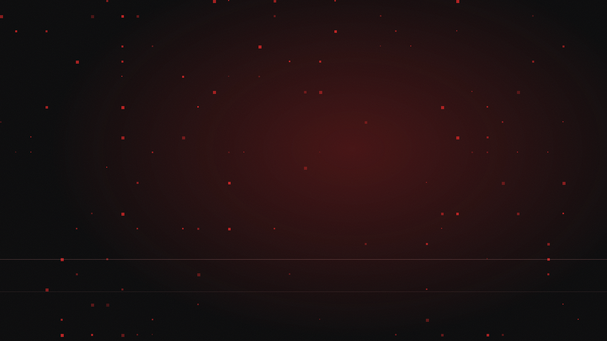

15.07.2026 / Dossier / critical / 5 min di lettura
Qilin e il debito tecnico: come si entra in una VPN senza password
Un difetto logico nella validazione dei certificati durante lo scambio chiavi IKEv1 permetteva di aprire una sessione VPN Check Point senza conoscere alcuna password. Qilin lo sfruttava da un mese quando il vendor se ne è accorto. Ma la vera notizia non è il bug: è che colpisce solo chi non ha mai spento un protocollo deprecato.

Il 7 maggio 2026 qualcuno ha aperto una sessione VPN su un gateway Check Point senza conoscere nessuna password. Non l'ha indovinata, non l'ha comprata da un broker, non l'ha estratta da un dump. Semplicemente non gli serviva.
Check Point se ne accorge il 4 giugno: quasi un mese di ritardo. L'8 giugno pubblica l'hotfix e l'advisory sk185033. Lo stesso giorno CISA inserisce CVE-2026-50751 nel catalogo Known Exploited Vulnerabilities, con deadline per le agenzie federali civili fissata all'11 giugno — tre giorni, il minimo previsto dalla BOD 22-01. Quando CISA concede tre giorni, non sta segnalando un rischio teorico.
L'origine
La vulnerabilità è classificata CWE-287, Improper Authentication. Non è un buffer overflow, non è una injection: è un difetto di logica. Durante lo scambio di chiavi IKEv1, il gateway valida i certificati in modo incompleto, e da quella falla si ottiene una sessione VPN autenticata senza credenziali. Non c'è un payload da costruire, non c'è una race da vincere. C'è una porta che si apre.
Le fonti terze riportano un CVSS 9.3. Va detto chiaramente che si tratta di un punteggio attribuito da terzi: al momento della pubblicazione NVD non aveva ancora assegnato uno score ufficiale. La cifra circola, ma non è ancora canonica.
C'è però una condizione che restringe tutto. Il difetto colpisce solo i gateway che espongono IKEv1 legacy e non impongono il machine certificate. Chi ha forzato IKEv2 non è vulnerabile. Chi ha reso obbligatoria la Machine Certificate Authentication non è vulnerabile. IKEv1 è deprecato da anni: RFC obsolete, raccomandazioni di dismissione, sostituto disponibile da oltre un decennio.
Questo non è un bug nuovo. È debito tecnico che presenta il conto. La CVE del 2026 esiste perché nel 2016, nel 2019, nel 2023 nessuno ha spento un protocollo che tutti sapevano andasse spento. La vulnerabilità è stata scoperta quest'anno; la decisione che l'ha resa sfruttabile è vecchia di anni, ed è stata presa — o non presa — da un amministratore che aveva una casella "compatibilità client legacy" e ha scelto di lasciarla spuntata.
La catena d'attacco
Dopo l'accesso iniziale (T1190, Exploit Public-Facing Application; T1133, External Remote Services) gli operatori — che Trend Micro traccia come Water Galura — si muovono con una discrezione notevole. La comunicazione passa dal protocollo Tox, peer-to-peer e cifrato, senza server centrale da sequestrare. L'esfiltrazione usa Rclone verso cloud storage (T1567.002), cioè uno strumento legittimo, firmato, con un traffico che assomiglia a un backup.
L'infrastruttura è VPS a noleggio: Kaupo Cloud Hong Kong, Shock Hosting, Vultr. Il dettaglio interessante è la correlazione geografica tra vittima e infrastruttura — i nodi vengono scelti vicino al bersaglio, perché una sessione VPN da un IP della stessa regione non accende nessun alert di viaggio impossibile. È una scelta di evasione, non di latenza.
Qui la ricostruzione si ferma, e bisogna essere onesti su dove. La fase di cifratura non è confermata pubblicamente per questo incidente. Ciò che risulta documentato è accesso iniziale ed esfiltrazione. Che sia stato un attacco a doppia estorsione andato fino in fondo, o una campagna fermata prima dell'impatto, o una raccolta dati senza intenzione di cifrare, le fonti pubbliche non lo dicono.
Allo stesso modo, le TTP che il profilo generale di Qilin associa al gruppo — T1003.001 (dump di LSASS), T1486 (Data Encrypted for Impact), T1490 (Inhibit System Recovery), T1036.005 (Masquerading) — provengono da altri casi. Sono utili come previsione, non come cronaca: nessuna fonte le conferma in questo incidente. Trattarle come fatti accertati sarebbe inventare un report forense che non esiste.
Anche la vittimologia resta opaca. Check Point parla di "poche dozzine di organizzazioni globali". Nessun settore, nessun Paese, nessun nome sono stati resi pubblici.
Detection
Il vantaggio, per una volta, è che il segnale è strutturale e non comportamentale.
- Inventariare i gateway con IKEv1 abilitato. È una configurazione, non un'inferenza: la si legge, non la si deduce. Se IKEv1 è attivo e il machine certificate non è obbligatorio, il sistema è nel perimetro di rischio.
- Cercare sessioni VPN autenticate senza un evento di autenticazione corrispondente. È l'impronta più diretta: una sessione che esiste senza che nessuno abbia mai presentato credenziali.
- Correlare geolocalizzazione IP di origine e sede della vittima. La vicinanza geografica è progettata per sembrare normale — ma un IP VPS commerciale in una regione dove non avete dipendenti resta anomalo, anche se è "vicino".
- Monitorare traffico Rclone in uscita: volumi elevati verso cloud storage da segmenti che non fanno backup verso il cloud.
- Cercare traffico Tox, che su una rete aziendale non ha nessuna ragione legittima di esistere.
Rimedi
L'ordine conta, perché il secondo punto rende il primo quasi superfluo.
- Applicare l'hotfix sk185033. Immediato, non negoziabile.
- Disabilitare IKEv1, forzando IKEv2. Questa è la vera rimediazione: elimina l'intera classe di problema, non la singola CVE.
- Rimuovere il supporto ai client legacy. È la ragione per cui IKEv1 era acceso; finché resta, la casella verrà rispuntata.
- Rendere obbligatoria la Machine Certificate Authentication.
- IPS attivo sui gateway.
- MFA su tutti gli accessi VPN.
Check Point segnala inoltre che la stessa infrastruttura sta probabilmente colpendo anche Palo Alto, Fortinet e F5. Se l'ipotesi regge, non è una campagna contro un vendor: è una campagna contro la categoria degli apparati edge, e patchare solo Check Point significa aver chiuso una finestra in una stanza con quattro finestre.
Cosa insegna
C'è un dettaglio in MITRE ATT&CK che vale più dell'intera CVE. Qilin è catalogato come S1242, e nella pagina si legge che Moonstone Sleet — gruppo statale nordcoreano — ha distribuito Qilin.
È il punto in cui la categoria "ransomware = crimine finanziario" smette di funzionare. Un gruppo statale non compra un ransomware per arricchirsi: lo usa perché è infrastruttura pronta, negabile e indistinguibile dal rumore di fondo criminale. La RaaS economy ha smesso di essere un mercato e è diventata una base condivisa tra criminali e Stati. Il che significa che l'attribuzione, davanti a un encryptor Qilin, non dice quasi nulla sul movente — e che il vostro modello di minaccia "tanto siamo troppo piccoli per interessare a uno Stato" ha appena perso la sua premessa.
Ma la lezione operativa è più prosaica, e più scomoda. Questo attacco non ha funzionato per un exploit brillante. Ha funzionato perché un protocollo che andava spento anni fa era ancora acceso. Il gap tra "deprecato" e "disattivato" è dove vivono i gruppi ransomware — e quel gap non lo chiude un hotfix. Lo chiude qualcuno che decide di rompere la compatibilità con un client legacy, accetta le telefonate del giorno dopo, e spegne IKEv1.